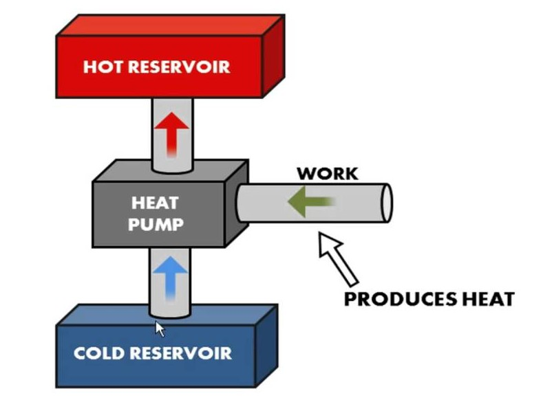
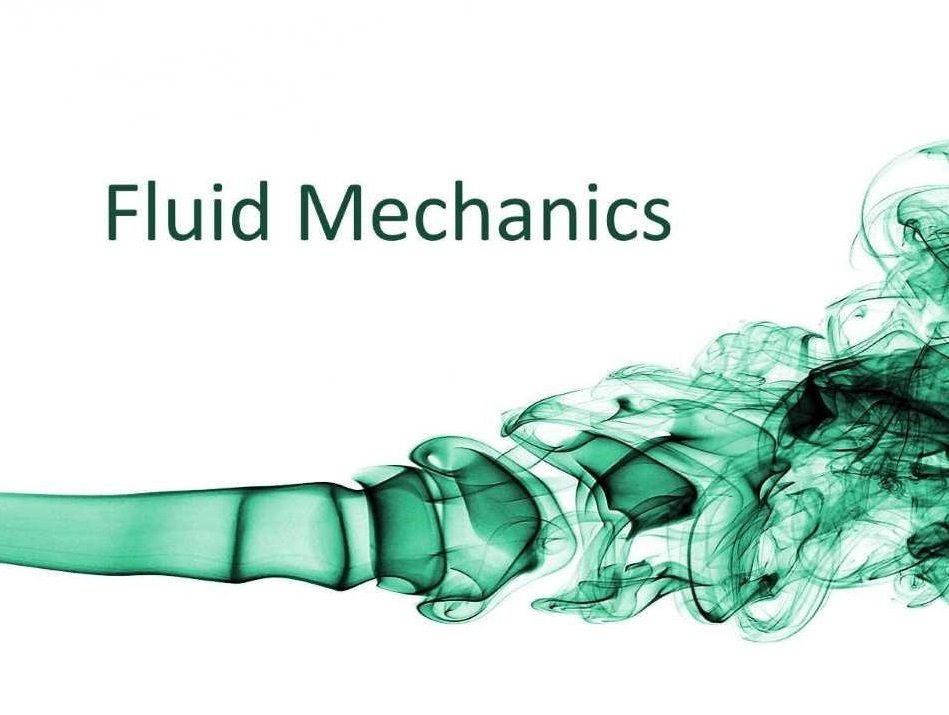
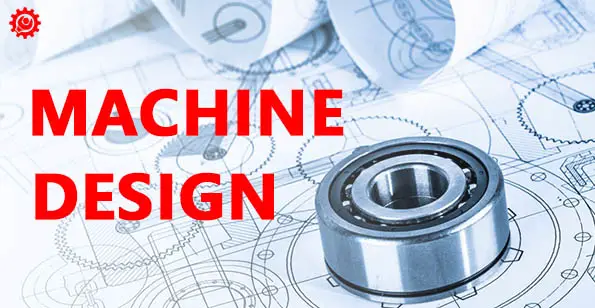
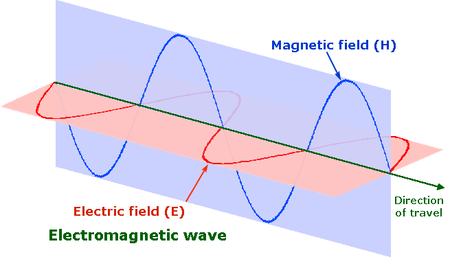
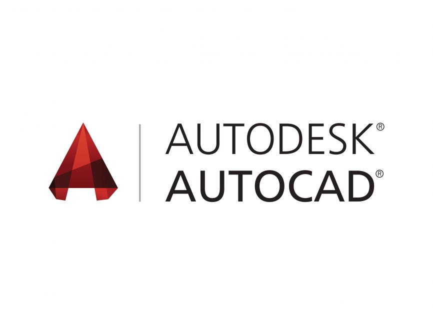
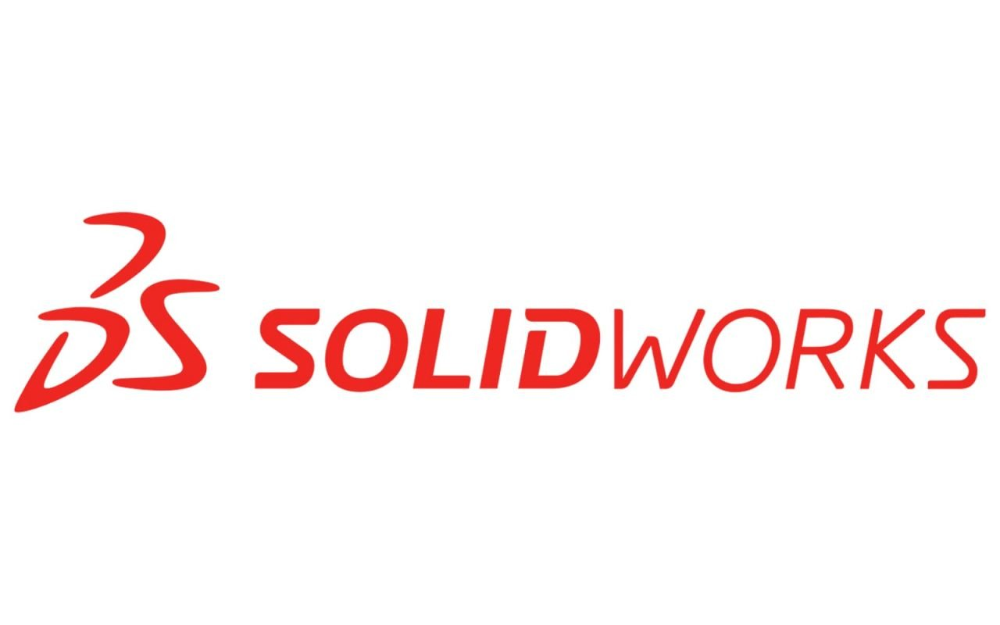
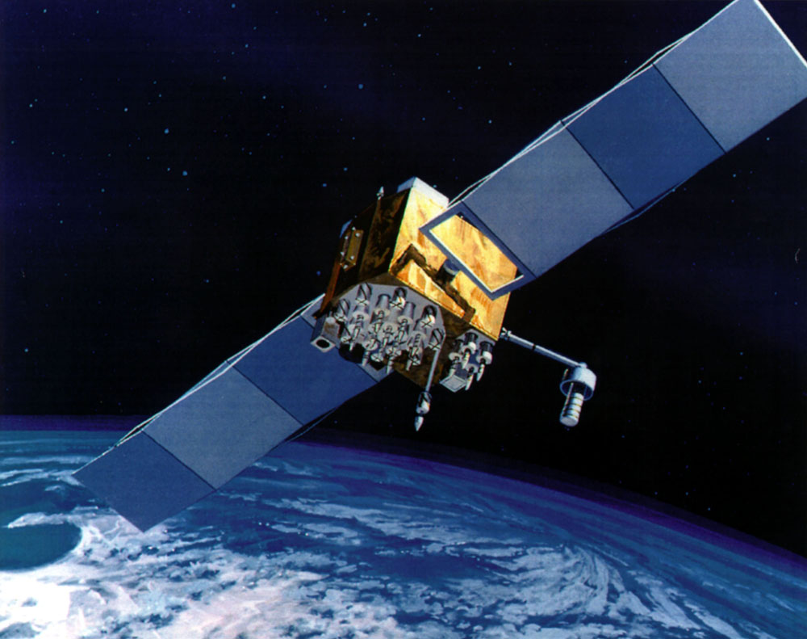
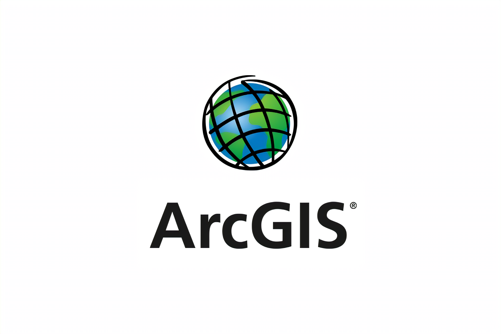

"Self-Learning Builds Independence, Deepens Understanding, And Fuels Continuous Growth."
Here Are Some Courses To Help You Develop New Skills, Expand Your Knowledge, And Achieve Your Goals
THERMODYNAMICS

Study of energy, heat, and work in physical systems, focusing on the laws governing energy transformations.
FLUID MECHANICS

Explores the behavior of fluids (liquids and gases) and their interactions with forces
MACHINE DESIGN

Focuses on the design and analysis of mechanical components like gears, bearings, and springs.
POWER SYSTEMS
Covers the generation, transmission, and distribution of electrical power.
CONTROL SYSTEMS
Study of systems that manage, command, direct, or regulate the behavior of other devices or systems.
ELECTROMAGNETICS

Examines electric and magnetic fields and their applications in various technologies.
AUTOCAD

AUTOCAD is a computer-aided design (CAD) software used for creating precise 2D and 3D drawings and models
SOLIDWORKS

SOLIDWORKS is a 3D computer-aided design (CAD) software used for modeling, simulating, and designing mechanical parts and assemblies
STRUCTURAL ANALYSIS
Analyzes structures to determine their response to loads and stresses.
CONCRETE AND STEEL DESIGN
Focuses on the design principles of concrete and steel structures.
TRANSPORTATION ENGINEERING
Deals with the planning, design, and operation of transportation systems.
MATLAB
A high-level programming environment for numerical computation, data analysis, algorithm development, and visualization, widely used in engineering and science.
SAP2000
Structural analysis and design software for civil engineers to model, analyze, and design structures like buildings and bridges.
NETWORKING
Study of computer networks, including protocols, architectures, and applications.
COMPUTER ARCHITECTURE
Explores the structure and behavior of computer systems.
PYTHON
A versatile, beginner-friendly programming language used for web development, automation, data analysis, artificial intelligence, and more.
ARDUINO programming
Programming for Arduino microcontrollers to create interactive projects involving sensors, actuators, and electronic systems.
ARCHITECTURAL DESIGN PRINCIPLES
Introduces fundamental concepts in architectural design and environmental considerations.
ENVIRONMENTAL DESIGN (SUSTAINABILITY)
Focuses on sustainable design practices and their impact on the environment.
GPS & satellite systems

Covers the principles and applications of the Global Positioning System and satellite navigation.
ARCGIS

A geographic information system (GIS) software for creating, analyzing, and managing spatial data and maps.
Which courses are you interested in?